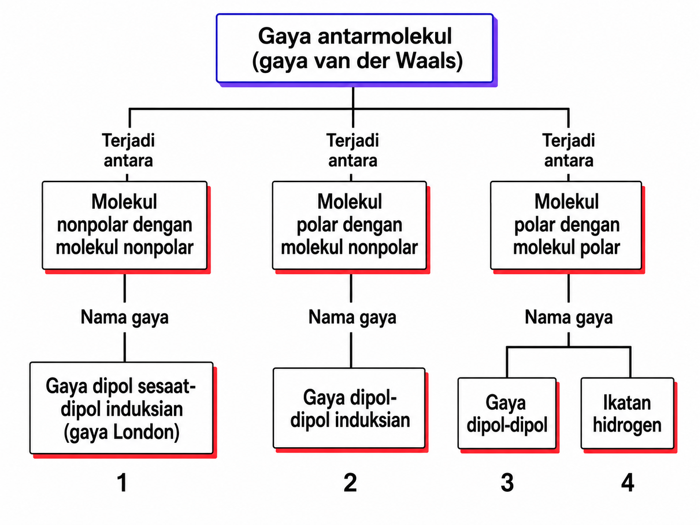
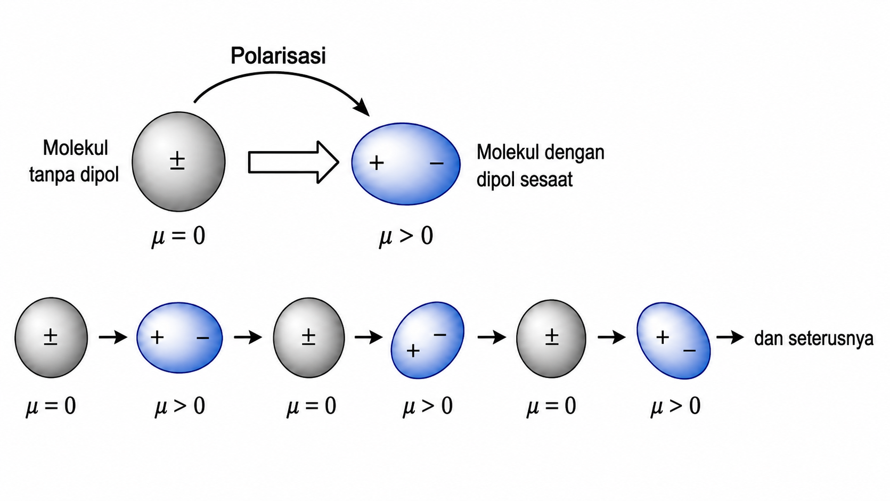
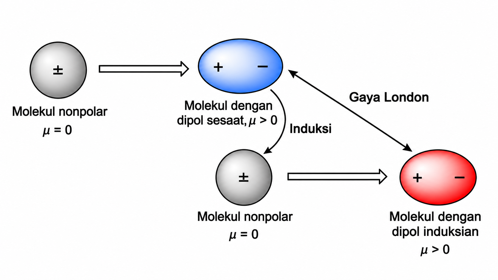
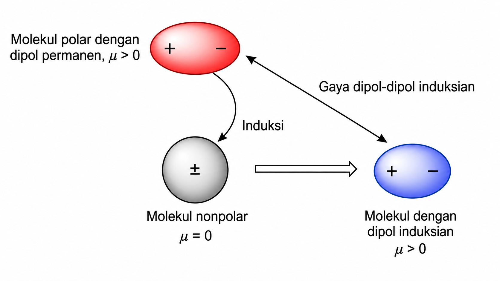
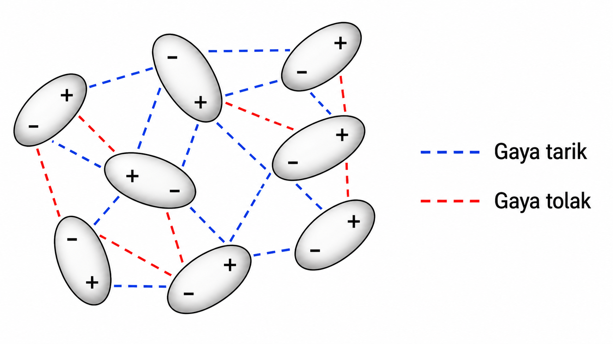
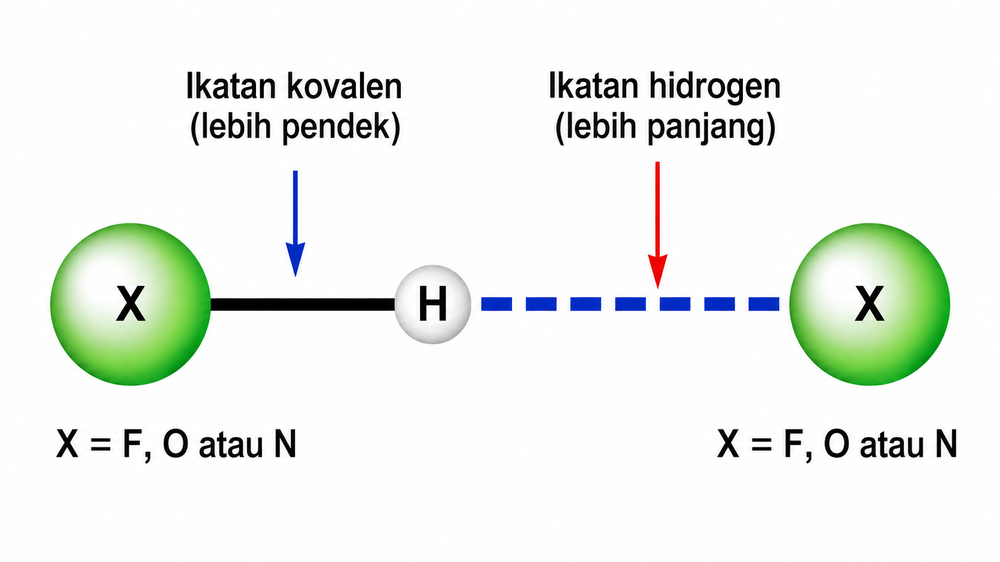
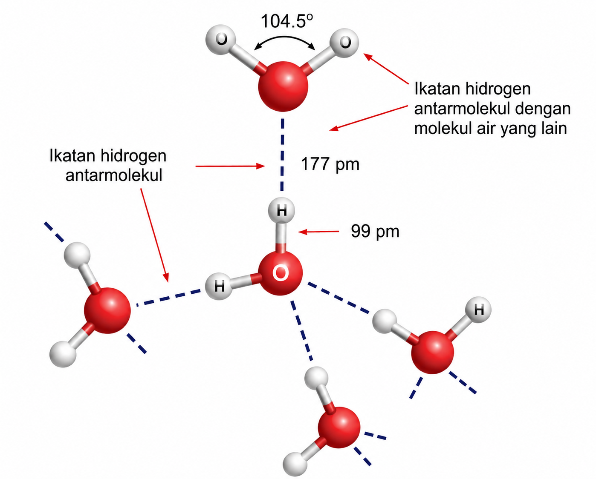

Isi identitas dulu ya:
Pada akhir Fase F, peserta didik mampu memahami sifat, struktur, dan interaksi partikel dalam membentuk berbagai senyawa serta kaitannya dengan sifat zat dalam kehidupan sehari-hari, termasuk gaya antarmolekul dan pengaruhnya terhadap sifat fisik zat.
Pernahkah kamu memperhatikan bahwa parfum dapat tercium aromanya dengan cepat setelah disemprotkan, sedangkan air di dalam gelas tidak langsung habis menguap pada suhu ruang? Padahal, keduanya sama-sama tersusun dari partikel-partikel kecil yang tidak dapat kita lihat secara langsung.
Dalam kehidupan sehari-hari, kita juga menemukan zat yang mudah berubah menjadi gas, zat yang memiliki titik didih rendah, dan zat yang tetap cair pada suhu ruang. Fenomena ini menunjukkan bahwa antarpartikel penyusun zat kemungkinan memiliki gaya tarik yang berbeda-beda.
Perhatikan perbandingan beberapa zat berikut. Zat-zat ini memiliki sifat fisik yang berbeda, salah satunya dapat dilihat dari titik didihnya.
Menarik, bukan? Beberapa zat memiliki titik didih yang sangat rendah, sedangkan air memiliki titik didih jauh lebih tinggi. Padahal semuanya tersusun dari molekul.
Dari fenomena ini, muncul rasa ingin tahu: apakah perbedaan titik didih hanya dipengaruhi oleh massa molekul? Atau ada gaya tarik tertentu di antara molekul yang membuat suatu zat lebih sulit menguap?
Mengapa beberapa zat mudah menguap pada suhu ruang, sedangkan air memiliki titik didih jauh lebih tinggi dan lebih sulit menguap?
Pada tahap ini, kamu belum harus menjawab dengan benar. Pertanyaan ini akan kamu jawab lebih lengkap setelah mengerjakan seluruh kegiatan LKPD, mulai dari Exploration, Explanation, Elaboration, hingga Evaluation.
Bagaimana jenis gaya antarmolekul dapat dibandingkan berdasarkan karakteristik molekul, dan bagaimana gaya tersebut memengaruhi sifat fisik zat?
Berdasarkan fenomena perbedaan titik didih zat, tuliskan dugaan awalmu untuk menjawab rumusan masalah. Dugaan ini tidak harus langsung benar. Setelah menyelesaikan tahap Exploration, Explanation, Elaboration, dan Evaluation, kamu dapat meninjau kembali apakah hipotesismu sudah tepat atau perlu diperbaiki.
Setelah semua tahap selesai, kamu akan dapat menjawab pertanyaan utama dengan lebih lengkap dan berdasarkan konsep ilmiah.
Pada tahap Engagement, kamu telah melihat bahwa beberapa zat memiliki titik didih dan kemudahan menguap yang berbeda. Pada tahap Exploration ini, kamu akan menyelidiki penyebab perbedaan tersebut melalui bacaan tentang karakteristik beberapa molekul.
Sebelum membaca bacaan eksplorasi, pelajari terlebih dahulu materi pendukung tentang gaya London, dipol-dipol induksian, dipol-dipol, dan ikatan hidrogen.
Catatan: Karena kegiatan ini berupa eksplorasi bacaan, kamu tidak perlu mengisi tabel data. Fokuslah pada hubungan antara karakteristik molekul dan jenis gaya antarmolekul.
Metana atau CH₄ merupakan molekul nonpolar. Pada molekul ini, penyebaran muatan secara keseluruhan relatif merata sehingga tidak memiliki dipol permanen. Walaupun demikian, elektron di dalam molekul CH₄ tetap selalu bergerak.
Pada suatu saat, persebaran elektron dapat menjadi tidak merata untuk sementara. Keadaan ini dapat menghasilkan dipol sesaat yang kemudian memengaruhi molekul CH₄ lain di dekatnya. Karena itu, meskipun CH₄ nonpolar, molekul-molekulnya tetap dapat saling tarik-menarik melalui gaya antarmolekul tertentu.
HCl merupakan molekul polar karena atom Cl lebih elektronegatif daripada atom H. Akibatnya, pasangan elektron dalam ikatan H—Cl lebih tertarik ke arah Cl. Hal ini menyebabkan bagian Cl bermuatan parsial negatif, sedangkan bagian H bermuatan parsial positif.
Karena memiliki dipol permanen, molekul HCl dapat berinteraksi dengan molekul HCl lain melalui tarikan antara sisi bermuatan parsial positif dan sisi bermuatan parsial negatif. Molekul polar seperti HCl juga dapat memengaruhi molekul nonpolar di dekatnya sehingga molekul nonpolar tersebut mengalami dipol induksian.
Air atau H₂O memiliki atom H yang terikat langsung pada atom O. Amonia atau NH₃ memiliki atom H yang terikat langsung pada atom N. Atom O dan N merupakan atom yang sangat elektronegatif, sehingga atom H yang terikat padanya menjadi bermuatan parsial positif cukup besar.
Molekul H₂O dan NH₃ juga memiliki pasangan elektron bebas pada atom elektronegatifnya. Kondisi ini memungkinkan terjadinya tarikan antarmolekul yang lebih kuat dibandingkan gaya dipol-dipol biasa. Tarikan tersebut berperan dalam menjelaskan mengapa zat seperti air memiliki titik didih yang relatif tinggi.
Dari contoh CH₄, HCl, H₂O, dan NH₃, dapat dilihat bahwa jenis gaya antarmolekul bergantung pada karakteristik molekul. Molekul nonpolar, molekul polar, campuran molekul polar dengan nonpolar, dan molekul yang memiliki H terikat pada N, O, atau F dapat menunjukkan jenis gaya antarmolekul yang berbeda. Perbedaan jenis gaya inilah yang dapat memengaruhi sifat fisik zat, seperti titik didih, kelarutan, dan kemudahan menguap.
Jawablah pertanyaan berikut berdasarkan bacaan eksplorasi dan materi pendukung. Gunakan istilah nonpolar, polar, dipol sesaat, dipol induksian, dipol permanen, dan ikatan hidrogen dengan tepat.
1. Berdasarkan bacaan, mengapa molekul nonpolar seperti CH₄ tetap dapat memiliki gaya antarmolekul?
2. Apa perbedaan karakteristik molekul CH₄ dan HCl sehingga jenis gaya antarmolekul dominannya berbeda?
3. Mengapa molekul polar seperti HCl dapat berinteraksi dengan molekul nonpolar di dekatnya?
4. Mengapa H₂O dan NH₃ dapat membentuk ikatan hidrogen?
5. Simpulkan cara membandingkan jenis-jenis gaya antarmolekul berdasarkan karakteristik molekul.
Catatan: Jawaban siswa tidak harus sama persis. Jawaban dianggap baik jika siswa mampu mengaitkan karakteristik molekul dengan jenis gaya antarmolekul yang sesuai.
Bacalah materi ini sebelum mengerjakan tahap Exploration. Materi ini membantumu memahami pengertian gaya antarmolekul, pembagian jenis gaya antarmolekul, serta cara membandingkan jenis gaya antarmolekul berdasarkan karakteristik molekul.
Molekul dapat saling berinteraksi melalui gaya tarik yang disebut gaya antarmolekul. Gaya ini bekerja di antara molekul yang satu dengan molekul lainnya. Gaya antarmolekul berbeda dengan ikatan kimia karena ikatan kimia bekerja di dalam molekul untuk mengikat atom-atom penyusunnya.
Adanya gaya antarmolekul memungkinkan molekul dalam fase gas berubah menjadi zat cair atau zat padat. Tanpa adanya gaya antarmolekul, gas akan sulit diubah menjadi cairan atau padatan karena molekul-molekulnya tidak memiliki gaya tarik yang cukup untuk saling mendekat.
Inti penting:
Semakin kuat gaya antarmolekul, semakin besar energi yang diperlukan untuk memisahkan
molekul-molekulnya. Karena itu, zat dengan gaya antarmolekul yang kuat cenderung memiliki
titik didih lebih tinggi.
Gaya antarmolekul dapat dikelompokkan berdasarkan jenis molekul yang saling berinteraksi. Secara umum, interaksi antarmolekul dapat terjadi antara molekul nonpolar dengan nonpolar, molekul polar dengan nonpolar, dan molekul polar dengan polar.

Bagan pembagian gaya antarmolekul berdasarkan jenis molekul yang berinteraksi.
Menghasilkan gaya dipol sesaat-dipol induksian atau gaya London.
Menghasilkan gaya dipol-dipol induksian.
Menghasilkan gaya dipol-dipol atau ikatan hidrogen jika memenuhi syarat tertentu.
Catatan: Untuk menentukan jenis gaya antarmolekul, perhatikan terlebih dahulu karakteristik molekulnya: apakah molekul nonpolar, polar, atau memiliki atom H yang terikat langsung pada N, O, atau F.
Gaya London disebut juga gaya dipol sesaat-dipol induksian. Gaya ini dapat terjadi pada semua molekul, tetapi menjadi gaya dominan pada molekul nonpolar.
Atom dan molekul dikelilingi oleh elektron bermuatan negatif. Sekilas, molekul seolah-olah akan saling menolak karena sama-sama memiliki elektron. Namun, pada kenyataannya, dapat terjadi gaya tarik elektrostatik antarmolekul.
Elektron dalam atom atau molekul selalu bergerak. Pada suatu saat, persebaran elektron dapat menjadi tidak merata. Akibatnya, salah satu sisi molekul menjadi lebih negatif, sedangkan sisi lainnya menjadi lebih positif. Keadaan sementara ini disebut dipol sesaat.

Ilustrasi ketidakseimbangan distribusi elektron yang dapat membentuk dipol sesaat.
Jika ada molekul nonpolar lain di dekatnya, dipol sesaat tersebut dapat memengaruhi distribusi elektron pada molekul tetangga. Molekul tetangga yang awalnya nonpolar kemudian mengalami pemisahan muatan sementara dan membentuk dipol induksian.

Dipol sesaat pada satu molekul dapat menginduksi molekul nonpolar di dekatnya sehingga terjadi gaya London.
Setelah terbentuk dipol sesaat dan dipol induksian, kedua molekul tersebut akan saling tarik-menarik melalui gaya elektrostatik antara sisi negatif dan sisi positifnya. Gaya tarik inilah yang disebut gaya London.
Alur terjadinya gaya London:
Molekul nonpolar → elektron bergerak tidak merata → terbentuk dipol sesaat →
molekul tetangga terinduksi → terbentuk dipol induksian → terjadi gaya tarik.
Contoh: CH₄, I₂, Cl₂, He, Ne, dan Ar.
Faktor yang memengaruhi: semakin besar ukuran molekul atau semakin banyak jumlah
elektron, gaya London cenderung semakin kuat.
Gaya dipol-dipol induksian terjadi antara molekul polar dan molekul nonpolar. Molekul polar memiliki dipol permanen, yaitu daerah bermuatan parsial positif dan daerah bermuatan parsial negatif yang tetap.
Ketika molekul polar berada dekat dengan molekul nonpolar, molekul polar dapat mengganggu persebaran elektron pada molekul nonpolar. Akibatnya, molekul nonpolar yang awalnya tidak memiliki kutub mengalami pemisahan muatan sementara dan membentuk dipol induksian.

Molekul polar dapat menginduksi molekul nonpolar sehingga terbentuk dipol induksian.
Alur terjadinya gaya dipol-dipol induksian:
Molekul polar memiliki dipol permanen → mendekati molekul nonpolar →
molekul nonpolar terinduksi → terbentuk dipol induksian → terjadi gaya tarik.
Contoh: interaksi antara HCl yang bersifat polar dengan Ar yang bersifat nonpolar.
Gaya dipol-dipol terjadi antara molekul-molekul polar, baik molekul polar yang sama maupun molekul polar yang berbeda. Molekul polar memiliki pusat muatan positif dan pusat muatan negatif.
Ujung positif suatu molekul polar dapat tertarik oleh ujung negatif molekul polar lain. Sebaliknya, ujung negatif suatu molekul polar dapat tertarik oleh ujung positif molekul polar lain. Tarikan inilah yang disebut gaya dipol-dipol.
Pada fase cair, molekul-molekul polar bergerak dan tersusun secara acak, tetapi tetap saling tarik-menarik berdasarkan kutubnya. Pada fase padat, susunan molekul polar biasanya lebih teratur. Jika zat padat berbentuk kristal molekuler, molekul-molekulnya tersusun rapi, teratur, dan berulang.

Pada gaya dipol-dipol, ujung positif suatu molekul polar tertarik oleh ujung negatif molekul polar lain.
Kekuatan gaya dipol-dipol dipengaruhi oleh kepolaran molekul. Semakin polar suatu molekul, gaya dipol-dipolnya cenderung semakin kuat. Pada molekul heterodiatomik seperti HCl, HBr, dan HI, kepolaran dipengaruhi oleh perbedaan keelektronegatifan atom-atom yang berikatan.
Contoh: HCl, HBr, HI, SO₂, dan aseton.
Contoh urutan kepolaran: HCl > HBr > HI. Semakin besar kepolaran,
semakin kuat gaya dipol-dipolnya.
Ikatan hidrogen merupakan gaya antarmolekul yang paling kuat dibandingkan gaya antarmolekul lainnya. Namun, ikatan hidrogen tetap jauh lebih lemah dibandingkan ikatan kovalen atau ikatan ionik.
Ikatan hidrogen terjadi apabila atom H terikat langsung pada atom yang sangat elektronegatif, yaitu N, O, atau F. Karena N, O, dan F sangat elektronegatif, atom H menjadi bermuatan parsial positif cukup besar.
Atom H yang bermuatan parsial positif kemudian dapat tertarik oleh pasangan elektron bebas pada atom N, O, atau F dari molekul lain. Tarikan inilah yang disebut ikatan hidrogen.

Ikatan hidrogen terjadi ketika H yang terikat pada N, O, atau F tertarik oleh pasangan elektron bebas molekul lain.
Syarat ikatan hidrogen:
1. Ada atom H yang terikat langsung pada N, O, atau F.
2. Ada pasangan elektron bebas pada N, O, atau F dari molekul lain yang dapat menarik atom H tersebut.
Contoh: H₂O, NH₃, HF, dan alkohol tertentu.
Air merupakan molekul yang sangat ideal dalam membentuk ikatan hidrogen. Pada molekul H₂O, atom H terikat langsung pada atom O. Atom O sangat elektronegatif dan memiliki pasangan elektron bebas.
Dalam air, setiap molekul H₂O dapat berinteraksi dengan beberapa molekul air di dekatnya melalui ikatan hidrogen. Interaksi ini membuat molekul-molekul air saling tarik-menarik cukup kuat.

Molekul-molekul air dapat saling berinteraksi melalui jaringan ikatan hidrogen.
Hubungan dengan titik didih:
Karena molekul-molekul air saling tarik-menarik kuat melalui ikatan hidrogen,
diperlukan energi lebih besar untuk memisahkan molekul-molekul air. Inilah salah satu
alasan air memiliki titik didih relatif tinggi dibandingkan banyak molekul kecil lainnya.
Polarisasi adalah keadaan ketika distribusi elektron dalam suatu atom atau molekul menjadi tidak merata. Akibatnya, pada molekul tersebut dapat terbentuk dua daerah muatan, yaitu satu sisi bermuatan parsial negatif dan sisi lain bermuatan parsial positif.
Sisi yang memiliki elektron lebih banyak akan bermuatan parsial negatif atau δ−, sedangkan sisi yang kekurangan elektron akan bermuatan parsial positif atau δ+. Pemisahan muatan inilah yang menyebabkan molekul dapat memiliki dipol.
Contoh sederhana:
Molekul nonpolar awalnya tidak memiliki kutub tetap. Namun, karena elektron selalu bergerak,
pada suatu saat elektron dapat lebih banyak berada di salah satu sisi molekul. Keadaan ini
membuat molekul seolah-olah memiliki sisi δ− dan δ+ untuk sementara.
Hubungan dengan gaya antarmolekul:
Polarisasi penting untuk memahami terbentuknya dipol sesaat,
dipol induksian, gaya London, dan gaya dipol-dipol induksian.
Jenis gaya antarmolekul dapat dibandingkan berdasarkan karakteristik molekulnya. Molekul nonpolar cenderung didominasi gaya London, interaksi molekul polar dan nonpolar menghasilkan gaya dipol-dipol induksian, molekul polar dapat mengalami gaya dipol-dipol, sedangkan molekul yang memiliki H terikat langsung pada N, O, atau F dapat membentuk ikatan hidrogen. Perbedaan jenis gaya antarmolekul dapat memengaruhi sifat fisik zat, seperti titik didih, titik leleh, kelarutan, dan perubahan wujud.
Pada tahap Exploration, kamu sudah membaca bacaan tentang CH₄, HCl, H₂O, dan NH₃, lalu menjawab pertanyaan berdasarkan karakteristik molekul dan jenis gaya antarmolekulnya.
Jelaskan bukan hanya jawabannya, tetapi juga alasan mengapa jenis gaya antarmolekul tersebut dapat terjadi.
Jawablah pertanyaan berikut berdasarkan hasil Exploration dan materi pendukung. Gunakan istilah molekul nonpolar, molekul polar, dipol sesaat, dipol induksian, dipol permanen, dan ikatan hidrogen dengan tepat.
1. Jelaskan bagaimana cara membandingkan jenis gaya antarmolekul berdasarkan karakteristik molekul.
2. Mengapa CH₄ yang bersifat nonpolar tetap dapat memiliki gaya tarik antarmolekul?
3. Jelaskan perbedaan gaya dipol-dipol induksian dan gaya dipol-dipol.
4. Mengapa H₂O dan NH₃ dapat membentuk ikatan hidrogen?
5. Mengapa jenis gaya antarmolekul dapat memengaruhi titik didih suatu zat?
Buka kembali hipotesis awalmu pada tahap Engagement. Setelah membaca materi dan menjawab pertanyaan Exploration, apakah hipotesismu sudah tepat? Tuliskan perbaikan atau penguatan hipotesismu.
Setelah selesai menjawab semua pertanyaan Explanation, klik tombol berikut. Jawabanmu akan disimpan dan dikunci, lalu pembahasan akan muncul sebagai umpan balik otomatis.
⚠️ Setelah menekan tombol ini, jawaban tidak dapat diubah kembali sampai jawaban akhir dikirim ke spreadsheet.
Catatan: Jawaban siswa tidak harus sama persis dengan kunci berikut. Jawaban dianggap baik jika siswa mampu menjelaskan hubungan antara karakteristik molekul, jenis gaya antarmolekul, dan sifat fisik zat.
Pada tahap Engagement, kamu telah mengamati bahwa beberapa zat mudah menguap, sedangkan zat lain lebih sulit menguap. Pada tahap Exploration dan Explanation, kamu sudah mempelajari bahwa perbedaan tersebut berkaitan dengan jenis dan kekuatan gaya antarmolekul.
Sekarang, kamu akan menerapkan konsep tersebut pada fenomena baru yang lebih dekat dengan kehidupan sehari-hari, yaitu mengapa beberapa cairan seperti alkohol, aseton, air, dan heksana memiliki sifat menguap yang berbeda.
Saat menggunakan cairan pembersih tertentu, seperti alkohol atau aseton, kita sering merasakan bahwa cairan tersebut cepat kering setelah dioleskan pada permukaan kulit atau benda. Sebaliknya, air biasanya membutuhkan waktu lebih lama untuk menguap pada kondisi yang sama.
Perbedaan ini tidak hanya dipengaruhi oleh banyak sedikitnya cairan, tetapi juga oleh gaya tarik antarmolekul yang terjadi di antara molekul-molekul penyusun zat tersebut. Semakin kuat gaya tarik antarmolekul, semakin besar energi yang diperlukan agar molekul dapat terlepas ke fase gas.
Air (H₂O) memiliki atom H yang terikat langsung pada atom O. Atom O merupakan atom yang sangat elektronegatif dan memiliki pasangan elektron bebas. Hal ini membuat molekul air dapat berinteraksi kuat dengan molekul air lain.
Etanol (C₂H₅OH), yang terdapat dalam alkohol pembersih, juga memiliki gugus O—H. Namun, etanol memiliki bagian hidrokarbon yang lebih besar dibandingkan air. Hal ini membuat interaksi antarmolekulnya tidak sama persis dengan air.
Aseton (CH₃COCH₃) memiliki ikatan C=O yang menyebabkan molekulnya bersifat polar. Akan tetapi, aseton tidak memiliki atom H yang terikat langsung pada N, O, atau F.
Heksana (C₆H₁₄) merupakan molekul nonpolar. Molekul ini tidak memiliki dipol permanen dan tidak dapat membentuk ikatan hidrogen, tetapi tetap dapat mengalami gaya tarik antarmolekul akibat pergerakan elektron.
Masalah yang harus kamu pecahkan:
Bagaimana karakteristik molekul air, etanol, aseton, dan heksana memengaruhi jenis
gaya antarmolekul yang bekerja, serta bagaimana gaya tersebut berkaitan dengan
kemudahan zat untuk menguap?
Jawablah pertanyaan berikut berdasarkan bacaan elaborasi dan konsep gaya antarmolekul yang telah kamu pelajari.
1. Berdasarkan karakteristik molekulnya, gaya antarmolekul apa yang dominan pada heksana? Jelaskan alasanmu.
2. Aseton bersifat polar, tetapi tidak memiliki H yang terikat langsung pada N, O, atau F. Gaya antarmolekul apa yang dominan pada aseton? Jelaskan.
3. Mengapa air dapat memiliki gaya antarmolekul yang kuat dibandingkan banyak molekul kecil lainnya?
4. Etanol dan air sama-sama memiliki gugus O—H. Mengapa keduanya dapat membentuk ikatan hidrogen?
5. Berdasarkan bacaan, jelaskan mengapa jenis gaya antarmolekul dapat memengaruhi kemudahan suatu zat untuk menguap.
Setelah selesai menjawab semua pertanyaan Elaboration, klik tombol berikut. Jawabanmu akan dikunci, lalu pembahasan otomatis akan muncul.
⚠️ Setelah menekan tombol ini, jawaban tidak dapat diubah kembali sampai jawaban akhir dikirim ke spreadsheet.
Catatan: Jawaban siswa tidak harus sama persis. Jawaban dianggap baik jika siswa mampu menerapkan konsep gaya antarmolekul pada fenomena penguapan zat dalam kehidupan sehari-hari.
Tahap Evaluation berisi soal-soal umum tentang materi gaya antarmolekul. Soal ini tidak lagi berfokus pada kasus sebelumnya, tetapi digunakan untuk mengukur pemahamanmu terhadap konsep gaya London, dipol-dipol induksian, dipol-dipol, ikatan hidrogen, serta hubungan gaya antarmolekul dengan sifat fisik zat.
Pilih satu jawaban yang paling tepat. Setelah selesai, klik tombol Simpan Evaluasi & Lihat Pembahasan. Jawaban akan dikunci dan pembahasan otomatis akan muncul.
⚠️ Setelah evaluasi disimpan, jawaban tidak dapat diubah kembali sampai jawaban akhir dikirim ke spreadsheet.
| No | Kunci | Pembahasan Singkat |
|---|---|---|
| 1 | B | Gaya antarmolekul adalah gaya tarik yang terjadi di antara molekul-molekul. |
| 2 | C | Gaya London dominan pada molekul nonpolar akibat dipol sesaat dan dipol induksian. |
| 3 | A | CH₄ bersifat nonpolar sehingga gaya dominannya adalah gaya London. |
| 4 | D | Dipol-dipol terjadi antara molekul-molekul polar. |
| 5 | B | Dipol-dipol induksian terjadi antara molekul polar dan molekul nonpolar. |
| 6 | E | Ikatan hidrogen terjadi jika H terikat langsung pada N, O, atau F. |
| 7 | C | H₂O dapat membentuk ikatan hidrogen karena H terikat pada O. |
| 8 | A | Semakin kuat gaya antarmolekul, titik didih cenderung semakin tinggi. |
| 9 | D | Aseton polar, sehingga gaya dominannya adalah dipol-dipol. |
| 10 | B | Urutan umum kekuatan: London < dipol-dipol induksian < dipol-dipol < ikatan hidrogen. |
Bagian refleksi ini bukan bagian dari skor evaluasi. Refleksi digunakan untuk mengetahui pemahaman dan kesulitanmu setelah mempelajari materi gaya antarmolekul.
Bagian mana yang paling mudah kamu pahami?
Bagian mana yang masih membingungkan atau perlu kamu pelajari kembali?
Setelah menyelesaikan evaluasi dan refleksi, klik tombol berikut untuk mengirim seluruh jawaban LKPD ke spreadsheet Guru Rusyda.